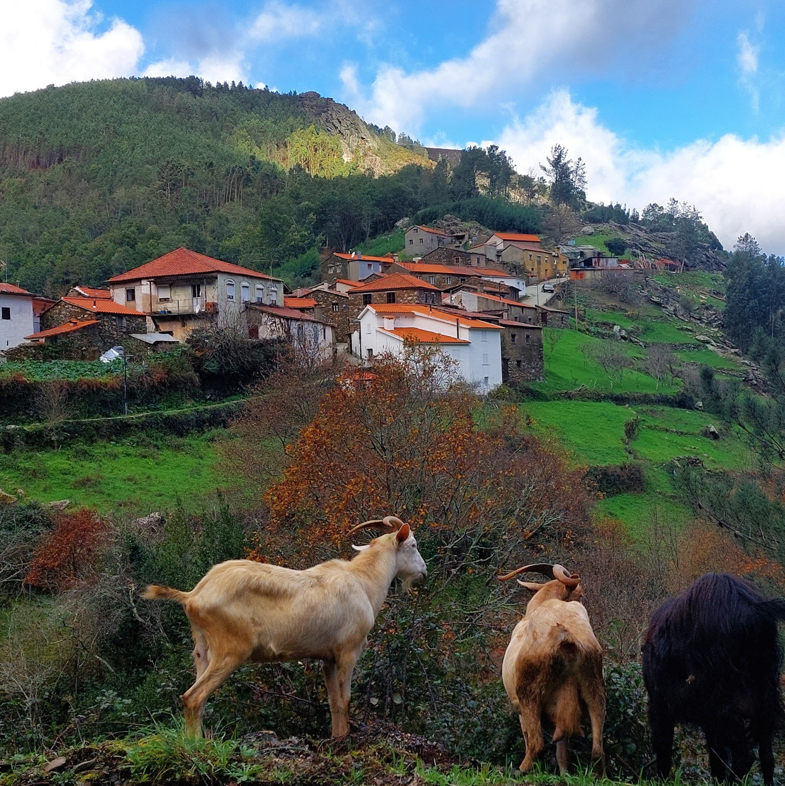
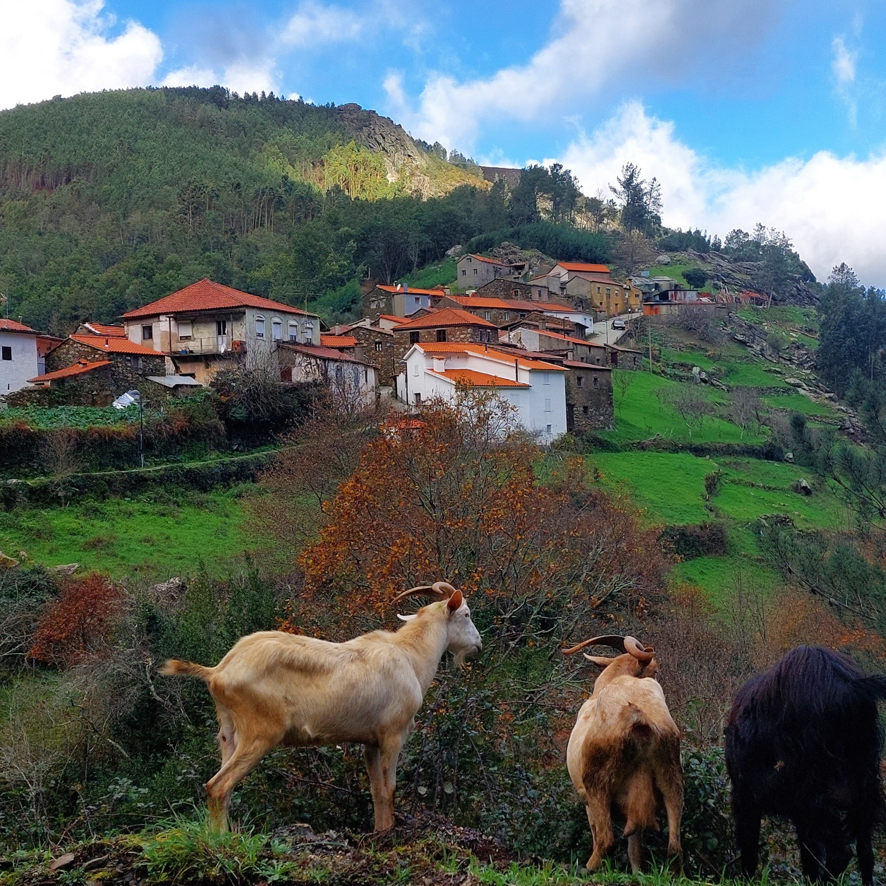
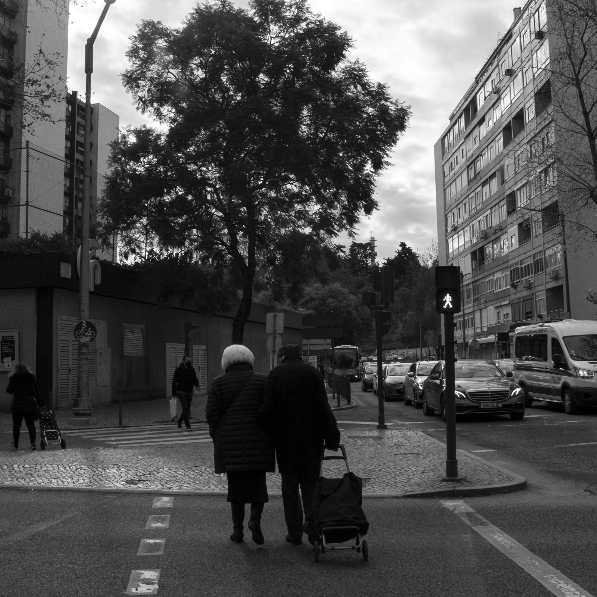
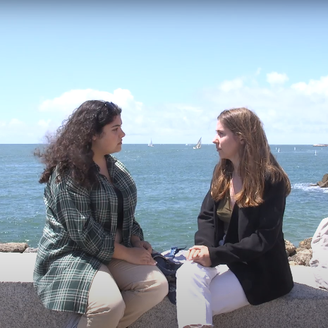
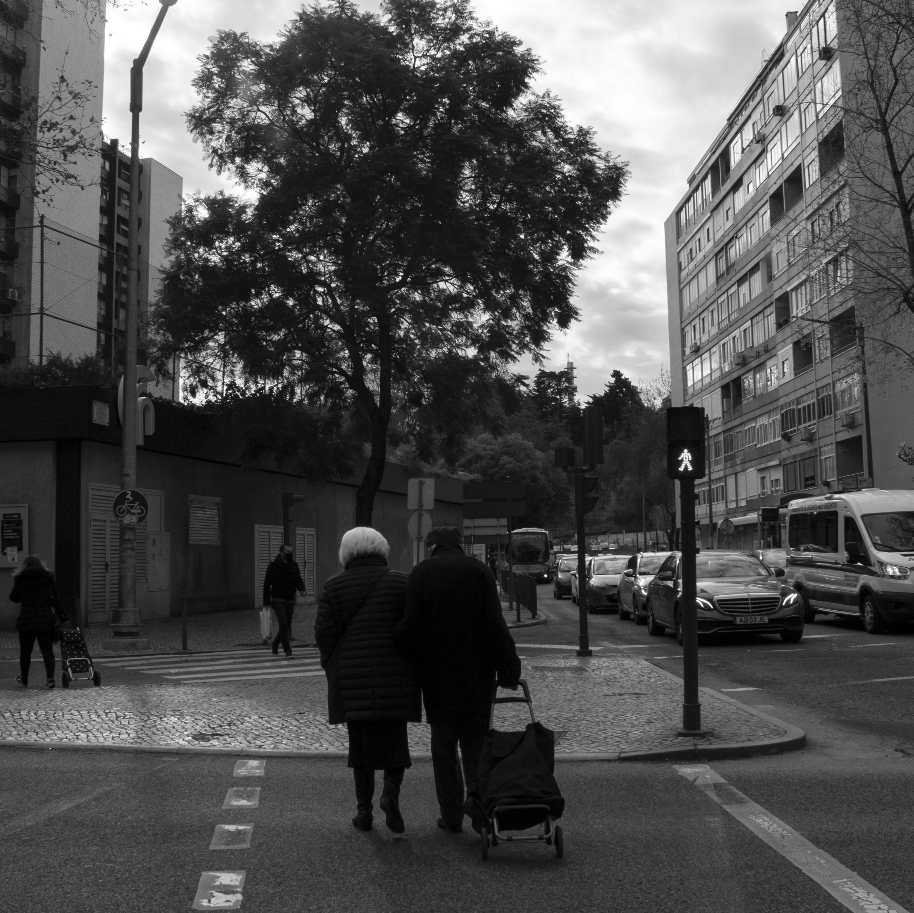
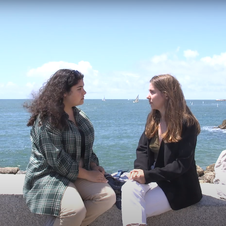

Portfólio
Realizo trabalhos de design e branding, fotografia e produção de vídeo, websites e redação de conteúdo. Penso nas necessidades de cada projeto de forma cuidada e por isso o resultado será um trabalho único.
 

 



Porque precisas de mim na equipa?
Estou habituada a trabalhar em contexto profissional e vejo o trabalho de equipa e rigor técnico como a melhor forma de atingir metas.
Sinto que todos temos algo a aprender com os outros e por isso estou animada para trabalhar numa empresa com visão a longo prazo para que juntos possamos crescer a notoriedade da marca e ter um impacto positivo na sociedade.
Pretendo continuar a crescer na minha jornada pois sinto o compromisso de fornecer soluções de design que sensibilizem o público através do seu importante impacto e elevem a identidade da marca.